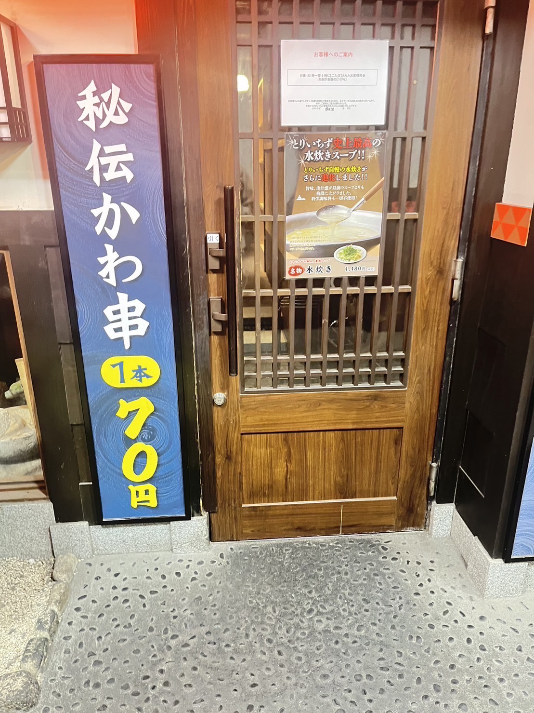
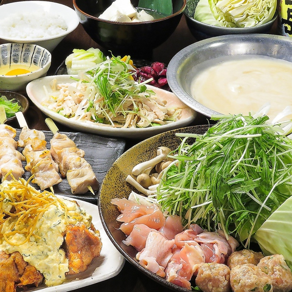

本格的な鶏料理専門店の味をカジュアルな価格で楽しめる居酒屋

とりいちず 津田沼店』
『とりいちず 津田沼店』は、本格的な鶏料理専門店の味をカジュアルな価格で楽しめる居酒屋。「自慢の水炊き鍋」は、鶏ガラと水を大鍋で8時間以上じっくり炊いた滑らかで優しい味わいでコラーゲンたっぷり。「生ビール中ジョッキ」はいつでも219円（税込）でご用意。

お客様の声
鶏料理専門店ということで、水炊き鍋とでか唐揚げを食べました。鍋はボリュームもあってスープもとても濃厚でした。また、でか唐揚げはからあげグランプリで金賞を受賞しているだけあってビールにとてもあいました。店内は、お洒落な感じな個室でくつろげました。店員さんも丁寧な接客でとても満足です。
-------------------------------------------------------------------
＜所在地＞ 千葉県船橋市前原西２丁目１４−６ 速水ビル 2F
＜電話番号＞ 050-5352-9039
＜営業時間＞ 11:45-翌4:00
＜アクセス情報＞
JR総武線 津田沼駅 徒歩3分、新京成線 新津田沼駅 徒歩5分
-------------------------------------------------------------------